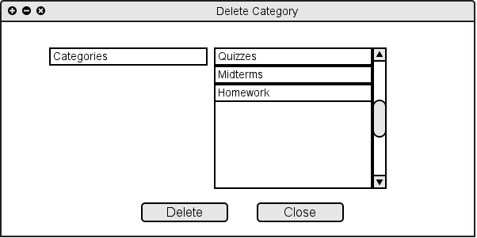

When the user chooses "Delete Categories" from "Assignments" menu or from "Assignemts/Categories...", the system shows Figure 2.4.3 A.

Figure 2.4.3 A: Delete Categories Filled
Figure 2.4.3 B: Delete Categories After Delete